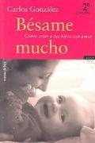

Bésame muchoCarlos González

Bésame mucho
Carlos González
Un pediatra defiende una crianza cercana y afectuosa frente a los métodos rígidos.
- Publicado originalmente
- 2003
- Enfoque
- Ensayo
- Para quién
- Madres, padres y docentes
- Ficha bibliográfica
- Open Library
Este libro tiene derechos de autor, así que no lo alojamos. Te dejamos la ficha para que sepas de qué trata y lo busques en una librería o biblioteca.
Psicología infantil, familiar y parentalVínculo entre padres e hijosDesarrollo psicológico a lo largo de la vidaApego infantil